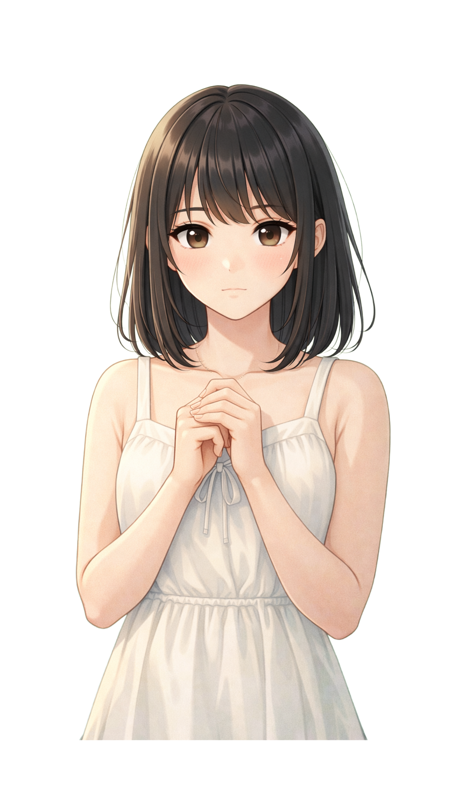

บทสนทนาระดับข่าวและข้อสอบชิงไหวชิงพริบ


「難しい言葉も覚えていこう！」
คำยากๆ ก็มาจำไปด้วยกันเถอะ!
คุณจะได้พบกับการสนทนาที่ต้องอาศัยการฟังข่าวลือ การสรุปความยาวเหยียด ซึ่งโหมดเราจำลองให้ผ่านหน้าต่างเกมแบบรวบรัด
▶ สคริปต์ N2 ขั้นกว่า
ทำให้หัวของคุณสวิตช์เป็นโหมด 'ผู้ใหญ่ภาษาญี่ปุ่น' และทลายกำแพงที่เคยมีใน N3 ซะสิ้นซาก
คำศัพท์แบบเฉพาะทาง
- ศัพท์ข่าว บทความ วิจารณ์สังคม
- ทดสอบจับประเด็นจากข้อความอ้อมค้อม
- ยูนิตเกมออกแบบมาให้วัดใจ
โต้ตอบผ่าน Visual Novel ลดความกดดัน

「一緒に勉強しようよ！」
มาเรียนด้วยกันเถอะ!
ข้อสอบ N2 เต็มไปด้วยความเคร่งเครียด แต่เกมจีบสาวซิมูเลชันจะดึงความกดดันเหล่านั้นออกไป ด้วยความน่ารักของสกินสาวแกล
▶ สคริปต์การฟังที่แสนนุ่มนวล
คุณฟังไม่ออก แต่ตัวละครของเราใจเย็นพร้อมให้คุณกดฟังซ้ำประโยคเดิม เพื่อพิจารณาและเรียนรู้โครงสร้างแทนที่เอาแต่เครียด
ระบบผู้ช่วย
- กดอ่านซ้ำจนกว่าคุณจะอ๋อ!
- ลบทิ้งบรรยากาศเงียบเหงาบนโต๊ะหนังสือ
- สาวแกลช่วยบิ้วความมั่นใจตอนตอบผิด
ความเร็ว TTS แบบญี่ปุ่น (1x Speed) รัวจัดเต็ม

「聞き取れるかな？」
ฟังออกไหมนะ?
การทดสอบของ N2 ไม่ให้คนฟังพักหายใจ ถ้าคุณอยากรอด คุณต้องให้ระบบเกมตั้งระบบ TTS เป็นฟูลสปีดให้พูดแบบติดจรวด
▶ ระบบฝึกความไวหู
เป็นการเทรนให้คุณกวาดสายตาอ่านตัวหนังสือและใช้กลไกหูพร้อมๆกัน เพื่อรับมือความหนักหน่วง
สไลดเดอร์ควบคุม
- เสียงไหลลื่นไม่กระตุก
- ฝึกกวาดสายตาดูช้อยส์ N2 ระหว่างฟัง
- สู้กับขีดจำกัดตัวเองเวลาฝึกซ้อม
สิทธิในการตรวจสอบสคริปต์ไทยตอนไหนก็ได้

「タイ語の翻訳があるから安心だね。」
มีแปลภาษาไทยด้วย วางใจได้เลยนะ
เวลาในเทปข้อสอบคือตายตัว แต่ในเกมคืออนันต์! คุณเจอประโยค N2 แฝงคำช่วยประหลาด ก็ดูแถบภาษาไทยได้เลยทีละคำ
▶ เครื่องมือสุดวิเศษ
กลายเป็นประสบการณ์การเรียนชั้นยอด เพราะคุณจะสามารถแยกองค์ประกอบเนื้อหา N2 ได้ชำนาญก่อนลงสนามจริง
คลังเฉลยในหน้ากระดานเดียว
- ชิปภาษาแปลไทยโคตรฉลาด
- เป็นหน้าต่างที่ทุกคนต้องมีไว้
- ลดเวลาในการกางหนังสือไปมา
เปลี่ยนเนื้อหาเป็นคอร์ส Survival เมื่อสมองล้า

「いざという時、大事だよ。」
พอถึงเวลาคับขัน มันสำคัญมากนะ
หากฟัง N2 ต่อเนื่องแล้วหูจะอื้อ เกมยังให้ฟังก์ชั่นผ่อนคลายกับแฟ้มบทสนทนาสถานการณ์ Travel Survival และ Medical
▶ รีสตาร์ทตอนหมดไฟ
ให้การฟังภาษาญี่ปุ่นของคุณไม่มีรอยต่อ ช่วยดึงสติให้กลับมาโดยการใช้สถานการณ์การเจ็บป่วยบนรถไฟเพื่อคลายเครียดแทน
กลยุทธ์เสริมจากเนื้อหาหลัก
- คอร์สท่องเที่ยวเอาตัวรอดจากการหลง
- ฟังเรื่อยๆ เปลี่ยนฟีลลิ่ง
- เข้าเล่นได้ 24 ชั่วโมง